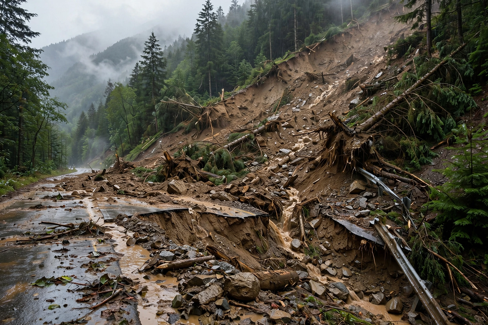

Landslide

A landslide is the downward movement of rock, soil or debris under gravity. Landslides range from slow creep that tilts fences over years, through debris flows that bury villages in minutes, to rock avalanches that can travel kilometres across valley floors.
They occur wherever slopes are steep, weak or disturbed, and are triggered most often by intense rain, earthquakes, volcanic eruptions and human excavation.
Types and triggers
Geologists classify slides by material and movement: falls, topples, rotational and translational slides, lateral spreads, and flows (debris flows, mudflows, lahars from volcanoes). Water is the usual accomplice — pore pressure in saturated soil effectively buoys grains apart and destroys slope strength — which is why landslide disasters cluster in monsoon and cyclone rains, as in the Himalayas, the Andes and Southeast Asia.
Famous disasters include the 1970 Ancash (Peru) earthquake landslide that buried Yungay and killed on the order of twenty thousand people, the 2014 Oso slide in Washington state, and recurrent monsoon landslides in Nepal and Bangladesh.
Prevention
Mitigation combines hazard mapping and land-use control, slope drainage and retaining engineering, reforestation of unstable slopes, and increasingly, monitoring and early warning using rain gauges, ground sensors and satellite radar that detects creeping slopes before failure. See Natural disaster and Weathering.
See also: Natural disaster · Earthquake · Flood · Erosion · Weathering · Volcano